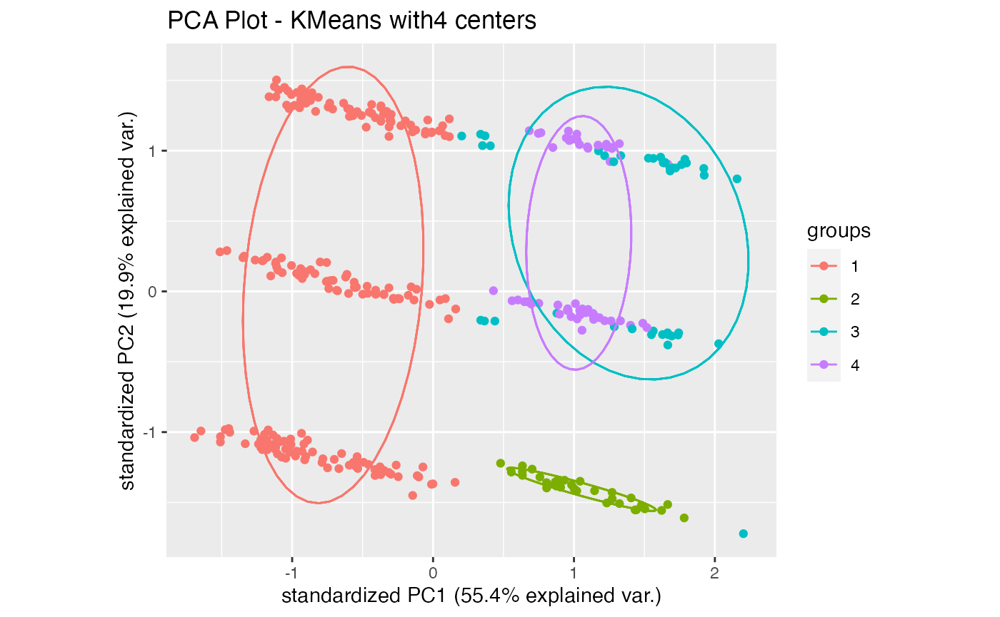
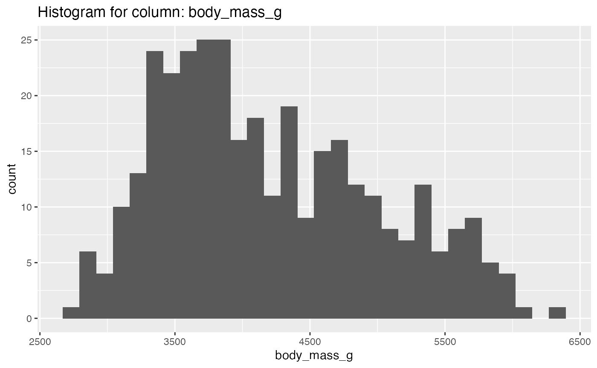
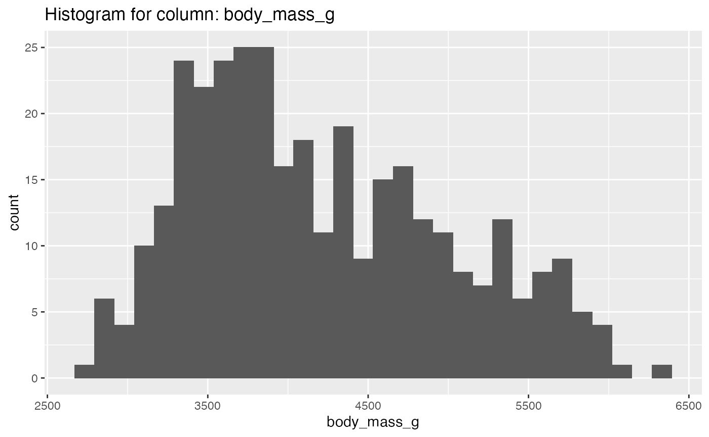

Function Examples
datascience_eda_R-vignette.Rmd
library(datascience.eda)
explore_KMeans_clustering and explore_DBSCAN_clustering:
library(datascience.eda)
library(palmerpenguins)
# you can call each clustering algorithm separately
explore_KMeans_clustering(penguins, centers = seq(3, 5))
#> Warning: did not converge in 10 iterations
#> [[1]]#>
#> [[2]]
#>
#> [[3]]
explore_DBSCAN_clustering(penguins, eps = c(1), minPts = c(5))
#> [[1]]
# OR you can just call explore_clustering(penguins) to apply both KMeans and DBSCAN at once
explore_text_columns:
library(sacred)
results <- explore_text_columns(apocrypha)Identified the following as text columns: text
Exploratory Data Analysis of “text” column:
Character Length:
The average character length of text is: 131.42
The median character length of text is: 118
The longest text(s) has 2257 characters:
“O Lord, Almighty God of our fathers, Abraham, Isaac, and Jacob, and of their righteous seed; who hast made heaven and earth, with all the ornament thereof; who hast bound the sea by the word of thy commandment; who hast shut up the deep, and sealed it by thy terrible and glorious name; whom all men fear, and tremble before thy power; for the majesty of thy glory cannot be borne, and thine angry threatening toward sinners is importable: but thy merciful promise is unmeasurable and unsearchable; for thou art the most high Lord, of great compassion, longsuffering, very merciful, and repentest of the evils of men. Thou, O Lord, according to thy great goodness hast promised repentance and forgiveness to them that have sinned against thee: and of thine infinite mercies hast appointed repentance unto sinners, that they may be saved. Thou therefore, O Lord, that art the God of the just, hast not appointed repentance to the just, as to Abraham, and Isaac, and Jacob, which have not sinned against thee; but thou hast appointed repentance unto me that am a sinner: for I have sinned above the number of the sands of the sea. My transgressions, O Lord, are multiplied: my transgressions are multiplied, and I am not worthy to behold and see the height of heaven for the multitude of mine iniquities. I am bowed down with many iron bands, that I cannot life up mine head, neither have any release: for I have provoked thy wrath, and done evil before thee: I did not thy will, neither kept I thy commandments: I have set up abominations, and have multiplied offences. Now therefore I bow the knee of mine heart, beseeching thee of grace. I have sinned, O Lord, I have sinned, and I acknowledge mine iniquities: wherefore, I humbly beseech thee, forgive me, O Lord, forgive me, and destroy me not with mine iniquites. Be not angry with me for ever, by reserving evil for me; neither condemn me to the lower parts of the earth. For thou art the God, even the God of them that repent; and in me thou wilt shew all thy goodness: for thou wilt save me, that am unworthy, according to thy great mercy. Therefore I will praise thee for ever all the days of my life: for all the powers of the heavens do praise thee, and thine is the glory for ever and ever. Amen.”
- The shortest text(s) has 13 characters:
“And I did so.”
Word Count:
The average number of words in “text” is: 24.73
The median number of words in “text” is: 22
The text(s) in “text” with most words (408 words):
“O Lord, Almighty God of our fathers, Abraham, Isaac, and Jacob, and of their righteous seed; who hast made heaven and earth, with all the ornament thereof; who hast bound the sea by the word of thy commandment; who hast shut up the deep, and sealed it by thy terrible and glorious name; whom all men fear, and tremble before thy power; for the majesty of thy glory cannot be borne, and thine angry threatening toward sinners is importable: but thy merciful promise is unmeasurable and unsearchable; for thou art the most high Lord, of great compassion, longsuffering, very merciful, and repentest of the evils of men. Thou, O Lord, according to thy great goodness hast promised repentance and forgiveness to them that have sinned against thee: and of thine infinite mercies hast appointed repentance unto sinners, that they may be saved. Thou therefore, O Lord, that art the God of the just, hast not appointed repentance to the just, as to Abraham, and Isaac, and Jacob, which have not sinned against thee; but thou hast appointed repentance unto me that am a sinner: for I have sinned above the number of the sands of the sea. My transgressions, O Lord, are multiplied: my transgressions are multiplied, and I am not worthy to behold and see the height of heaven for the multitude of mine iniquities. I am bowed down with many iron bands, that I cannot life up mine head, neither have any release: for I have provoked thy wrath, and done evil before thee: I did not thy will, neither kept I thy commandments: I have set up abominations, and have multiplied offences. Now therefore I bow the knee of mine heart, beseeching thee of grace. I have sinned, O Lord, I have sinned, and I acknowledge mine iniquities: wherefore, I humbly beseech thee, forgive me, O Lord, forgive me, and destroy me not with mine iniquites. Be not angry with me for ever, by reserving evil for me; neither condemn me to the lower parts of the earth. For thou art the God, even the God of them that repent; and in me thou wilt shew all thy goodness: for thou wilt save me, that am unworthy, according to thy great mercy. Therefore I will praise thee for ever all the days of my life: for all the powers of the heavens do praise thee, and thine is the glory for ever and ever. Amen.”

 

explore_categorical_columns:
library(dplyr)
library(MASS)
df <- data.frame(lapply(survey[, c('Sex','Clap')], as.character),
stringsAsFactors=FALSE) %>% tibble()
results <- explore_categorical_columns(df, c('Sex','Clap'))
results[[1]] %>% knitr::kable()| column_name | unique_items | no_of_nulls | percentage_missing |
|---|---|---|---|
| Sex | Female, Male, NA | 1 | 0.422 |
| Clap | Left, Neither, Right, NA | 1 | 0.422 |
results[[2]][[1]]
results[[2]][[2]]